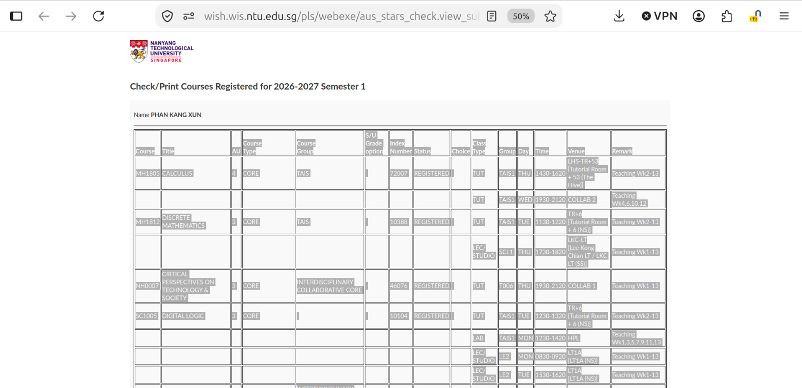
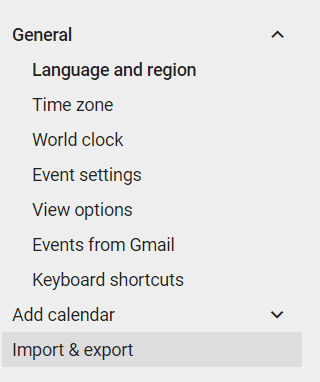
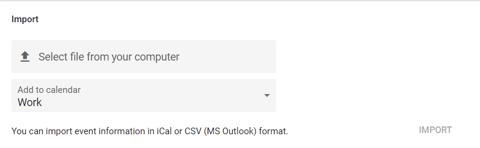

Paste your NTU course registration table (the tab-separated export from StudentLink), set your semester's Week 1 Monday and recess placement, and generate a CSV ready to import into Google Calendar. Anything the parser can't read is reported below with its line number — check that list before you import.
Highlight the whole table (including the header row) and copy it.
Paste it into the box below, replacing the sample data.

2 · Raw table3 · Semester settings
4 · Generate
5 · Report
Nothing generated yet.
6 · Output
7 · Import into Google Calendar
Consider creating a fresh, empty calendar first (Google Calendar sidebar → Other calendars + → Create new calendar). Importing into its own calendar means you can undo the whole thing later by just deleting that calendar.
In Google Calendar, click the gear icon (top right) → Settings, then scroll the left sidebar down to Import & export.

Click Select file from your computer and choose the .ics file you downloaded above (or the .csv, if you prefer). Use the Add to calendar dropdown to pick the calendar you just created, then click Import.

Google Calendar will show how many events were successfully added. Check your calendar afterwards against the Report section above — if it warned about duplicates or dropped rows, those won't show up as extra events.